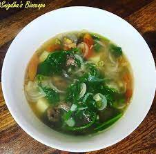
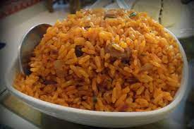

Other state

Famous place of other state
Manas National Park
The next on the list of Assam places to visit is the Manas National Park, which is a UNESCO Natural World Heritage site, a Project Tiger Reserve, an Elephant Reserve, a Biosphere Reserve all in one, and the best tourist place in Assam! Being famous for the rare golden langur and the adorable red panda, Manas is one of the best national parks in Assam and even all of India for those who wish to witness the rare species of India’s flora. It’s one of the best tourist attractions in Assam owing to not only its rich biodiversity but also for its stunning scenery and surreal natural landscape ranging from forested hills, alluvial grasslands, and tropical evergreen forests. Home to India’s second-largest tiger population, it harbours the maximum population of endangered Indian species as listed in the IUCN Red Book.


Elephant Falls
The popularity of Meghalaya is largely attributed to the numerous astonishing waterfalls it is blessed with. One of the most popular ones among these waterfalls is Elephant Falls. It is a 3-tiered waterfall situated in the middle of a refreshing lush green forest. The noise of the crashing of crystal clear water with the solid rocks, however ironical it may sound, feels soothing. The sight of this waterfall is worth capturing in your camera. Just a few miles away from the capital city, Shillong, these falls are one of the most awe-inspiring sites in Shillong. Do not miss this gem of nature on your Meghalaya trip!
Double Decker Living Root Bridge
You must have seen its pictures on the internet; this bridge has that kind of fame. This 3 km long living root bridge stands at a height of 2400 feet. People take a trek into the rainforest of Cherrapunji that normally takes 7 hours to reach the spot where this famed bridge is situated. This bridge is an excellent example of how wonderful things could be if mankind and nature worked in collaboration, and is among the top Meghalaya tourist places. Though there are many astonishing living root bridges in Meghalaya and it is believed that some of them are over 500 years old, this double-decker one shows its distinct popularity. One must take a walk on this unique bridge for a once-in-a-lifetime experience because it is one of the most unique places to visit in Meghalaya.


Neer Mahal Palace
Famously known as the Lake Palace of Tripura, Neer Mahal Palace is the living witness of Tripura’s Past glory. The antique architectural designs, lush green lawn, and royal decoration of this palace are enough to give you a wow factor. Located in the middle of Rudrasagar Lake, the palace was constructed by King Bir Bikram Kishore Manikya Bahadur. Besides storing the historical and royal significance of Tripura, the place is also a hub of adventurous activities. Yes! Inside the palace premises, numerous water sports activities take place. Hence, if you want to enjoy the essence of history with adventure, Neer Mahal Palace is the best tourist place in Tripura to pay a visit.
Nathula Pass
Nathula Pass is located at a height of 14140 feet and this is the best place to be for the trekking enthusiasts when visiting Sikkim. The border trade market, Sherathang, is a popular place where tourists can buy different kinds of Tibetan items at a cheap price. This Sikkim point of interest is famous among travelers. Near to that, there is a tiny place called Kupup. It always stays under clouds, which surely will be a nice experience for you. The view from the Nathula Pass is remarkable too. Location: 56 km east of Gangtok, the capital of Sikkim

Mahamuni Buddha Mandir
Built around hundreds of years ago, this monastery is a prominent religious attraction for Buddhist followers. The inside and outer structure of the place is beautifully crafted by following the Myanmar architectural designs and features one of the oldest Buddhist idols in India. During the month of April and May when the famous Buddha purnima festival takes place, thousands of pilgrims and devotees visit the place from all around the world. The temple is open throughout the year. Hence, if you want to witness a glimpse of Buddhist culture in Tripura, Mahamuni Buddha Mandir can be the best tourist place in Tripura to visit.
Green Lake
Fix your eyes to the jade-green lake surrounded by snow-covered glaciers and mountains. Green Lake is still an unexplored and unhindered destination in Sikkim. It serves as a base to the those willing to climb Mount Kanchenjunga and Zemu glacier. Starting from Thangu village, the trek to Green lake passes through the magnificent Kanchenjunga National Park and also brings forth the scenery of the confluence of the Zemu Chu and Lachen Chu which are two very significant rivers of the region. From Gangtok, you drive to Lachen via Mangan and then Thangu to start your trek. Keep your eyes open for wildlife, especially for the rarely found Red Panda in the region.

Imphal
When it comes to tourist places to visit in Manipur, we know Imphal is obvious. This in fact is one of the most famous places to visit in Northeast India. Imphal is located in the heart of Manipur, flaunting the beauty of hilltops and foothills in all their glory. Head to the valleys and behold the panoramic views of the surrounding, including important landmarks like Manipur State Museum, Palace of Kangle and Polo Ground. One of the greatest Manipur destinations, Imphal is bejeweled with glittering lakes and waterfalls you’ll stumble across as you take a tour. It is also a great place to be a part of various Manipur festivals. There are numerous amazing things to do in Imphal.
Khongjom
A place that pays a tribute to the military, Khongjom is one of the best Manipur destinations. Right here, the revered major general, Paona Brajabashi with his troops fought with the British during their reign. The was is known as Anglo-Manipur War. Today there is a memorial built in remembrance of the brave fighters, which holds historical importance. The place is perfect for an Indian patriot, or anyone with interest in military and the history of wars. This is a beautiful place in Manipur, especially during late hours.
Ravangla
Embark on a journey to explore a lesser-known quaint village amidst the high mountains of Eastern Himalayas in South Sikkim. Ravangla is a village at an elevation of around 8000 feet above sea level with breathtaking landscapes painted by Kanchenjunga and its sister peaks of Kabru, Pandim, Siniolchu. Rayong sunrise viewpoint, Temi Tea Garden, Relang hot spring and Ralang monasteries are few local attractions that can interest a traveler. The winding roads which take you to these places and Ravangla are very scenic too.
FAMOUS FOOD OF OTHER STATE

Papaya Khar
Khar is an alkali prepared from sun dried skin of some varieties of banana. It is prepared by filtering the water from the burn ashes of the skin of the banana. This khar extract is preserved in bottles and then used to make khar recipes. A traditional Assamese meal begin with khar. There are many different khar recipes and among them Papaya khar is very popular.

- If you want recipe of this food so please click the button Click me
Champthong Or Kangshoi
Chamthong or Kangshoi – a healthy vegetable stew. This dish is very popular in Manipur. It is a vegetable stew. It consists of seasonal vegetables that are boiled and flavoured with sliced onions, cloves, salt, garlic, maroi and a bit of ginger.
- If you want recipe of this food so please click the button Click me
Jadoh
Jadoh is a laboriously-made dish made with rice and meat. Being a Khasi cuisine, it takes hours to get the recipe done. Here's how to make Jadoh. When it's cooked, sprinkle the coriander over it and serve hot.
- If you want recipe of this food so please click the button Click me
Momos
Momo is a type of steamed filled dumpling with origins from the Himalayan region that is popular in Tibet, Bhutan, Nepal and India. In Nepal, where it is considered a national dish, they are usually served with a sauce known as achar influenced by the spices and herbs used within many South Asian cuisines. It can also be cooked as soup versions known as jhol momo where the broth is made from achar using a mixture of tomatoes, sesame seeds, chillies, cumin and coriander or mokthuk from boiling pork/buffalo bones mixing with various herbs and vegetables.

- If you want recipe of this food so please click the button Click me
Misa Mach Poora
Misa Mach Poora is a mouth-watering side dish. It is grilled shrimp cooked in mustard oil, lemon juice, orange zest and assorted spices. Apart from these dishes, what you must also try while in Mizoram, are their two popular drinks. One of them is Zu, or the local tea which they like to drink with almost every meal.

- If you want recipe of this food so please click the button Click me
Pork with Bamboo Shoot
Fermented bamboo shoot is commonly known as bas tenga. Cooking pork with a generous portion of fermented bamboo shoot is very popular in Naga cuisine. In Manipur, India, they are known as u-soi.

- If you want recipe of this food so please click the button Click me
Chakhwi
An integral part of Tripura’s history and cuisine, it can be made with any meat or vegetable of your choosing
- If you want recipe of this food so please click the button Click me